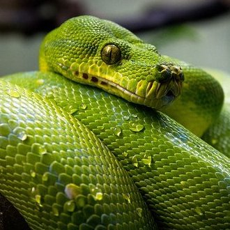
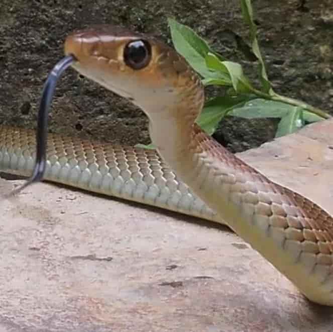

Overview: Snakes are often fun pets to have that come with a lot of responsibility and demands. Although it depends on the breed, snakes are overall are not meant to be kept as beginners' pets because of how high maintenance they are regarding their environments and eating habits. It is also not recommended to keep a snake as a pet because of how often they die due to the stress from being held captive.
 Diet & Living Spaces: Snake diets can be very tricky to understand. While most snakes prefer to eat live mice, it is not recommended that you feed them live mice unless they reject the frozen mice that you thaw out. This is because sometimes the mouse will attack the snake and can cause your snake serious harm. To avoid this, simply feed your snake an already-dead frozen and thawed out mouse. Make sure you provide your snake with fresh water in a bowl every day. Almost every type of snake will require some sort of heating device such as heat lamps, heat pads, heat panels, etc. In order to find out which type of heat source is best for your type of snake, ask a veterinarian. You should also provide hideaways and a few inches of substrate mixture so your snake can burrow in and out of the mixture very easily. When handling snakes, it's important to take every precaution necessary such as using a snake hook. They are especially helpful for preventing your snake from mistaking your hand for food. In order to maintain a good temperature and humidity level for your snake, you should include a thermometer and hydrometer to determine whether your snake's enclosure is warm enough.
Common Health Issues: Snakes often develop skin infections due to the conditions of their enclosure being too moist and/or too dirty. Snakes that are kept in conditions that are too dry may hold on to skin when they shed and develop bacterial infections of the skin from the debris build up. This is also a common issue when owners decide to peel the shedding skin off of the snakes themselves. This is painful for snakes and it puts them at a greater risk for developing skin infections. In order to combat snakeskin infections, it is important to keep the enclosure's humidity and heat at your breed's required level at all times and to prevent yourself and other people from touching your snake, especially while they are shedding.